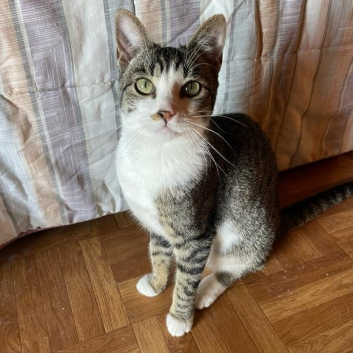
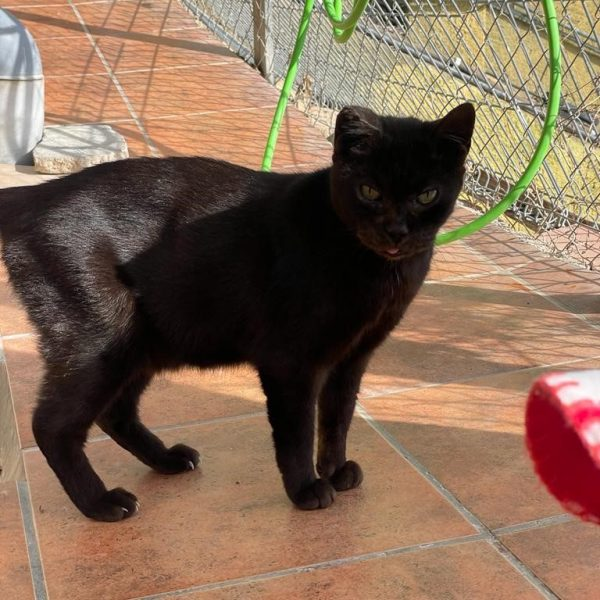
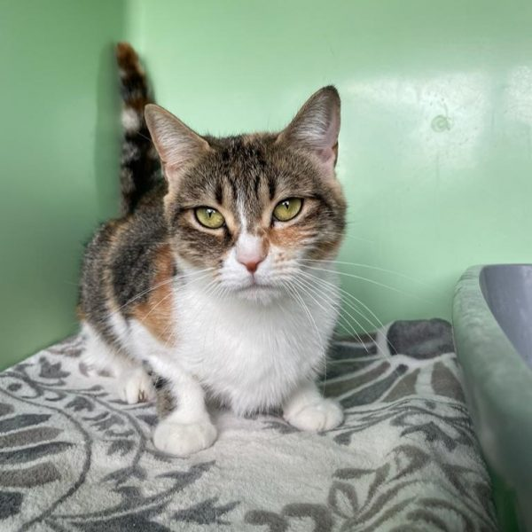
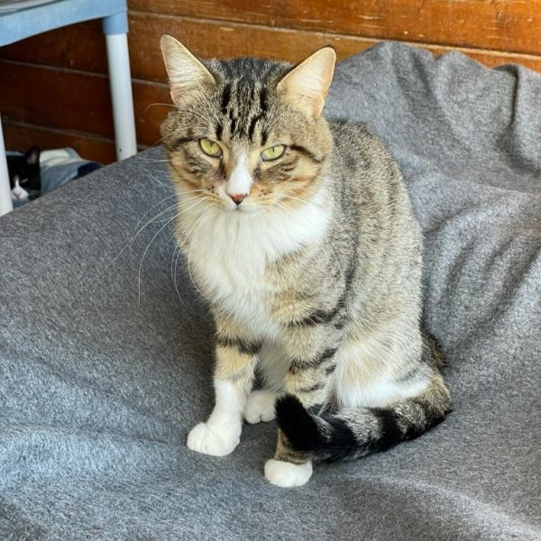
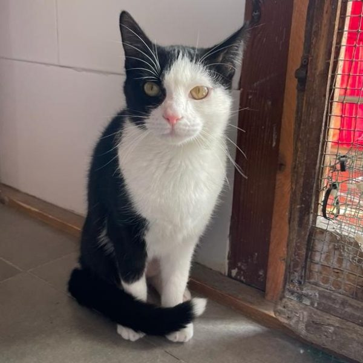
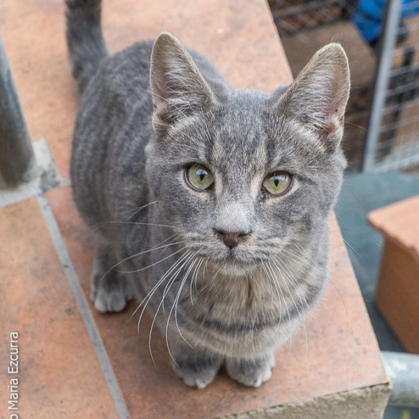
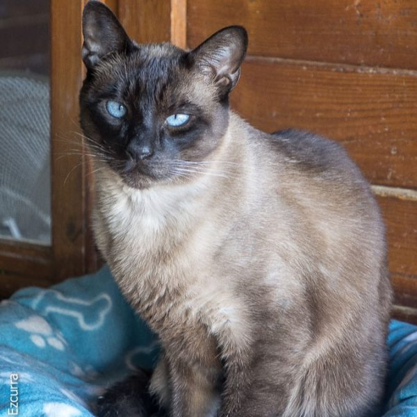
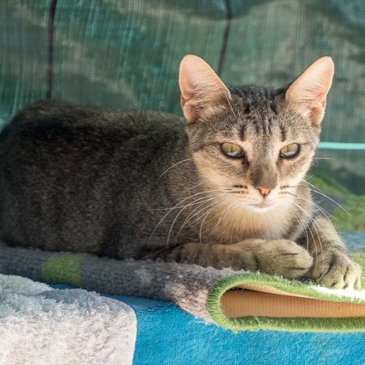
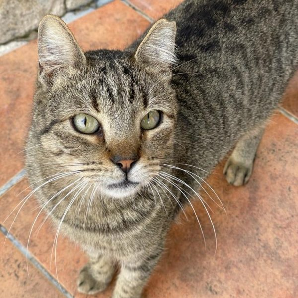

Karma
- Edat: 10 messos
- Raça: Europea
- Condició: Esperant una casa
Karma i els seus germans Tao, Dharma i Siddartha van ser recollits
del carrer amb la seva mare Yemaya quan eren molt petits. Com a bon
cadell té moltes ganes de joc i diversió. Busquem per a ella una
família amb temps per poder dedicar-hi ja que com que és normal a la
seva edat, necessita cremar energia. Esperem que Karma pugui trobar
aviat aquesta llar que tant mereix on ser estimada i feliç per la resta
de la seva vida.

Lenguita
- Edat: 7 anys
- Raça: Gat
- Condició: una gata més gran que mereix passar els seus últims anys de
vida estimada i cuidada
Lengüita ja fa molts anys que és al refugi, durant molt de temps
va ser una gata que no volia saber res de l'ésser humà i no era viable
buscar-li una família però amb el pas dels anys Lengüita ha canviat molt
i encara que es pot mostrar una mica desconfiada dels desconeguts ,
quan confia és una gata que li encanta gaudir de les seves sessions de manyagues.

Lilo
- Edat: 3 anys
- Raça: Europea
- Condició: Sociable i carinyosa
Lilo va ser trobada abandonada dins una caixa amb els seus cadells.
Calculem que va néixer el gener del 2020. Lilo és una gata sociable i
afectuosa a la qual li encanta el contacte amb les persones. Esperem
que Lilo pugui trobar per fi aquesta llar que tant mereix, on ser
estimat i cura com es mereix.

Stitch
- Edat: 3 anys
- Raça: Europea
- Condició: Sociable
Stich va ser trobat abandonat dins una caixa. Vam calcular que va
néixer el gener del 2020. Encara que a Stich li va costar adaptar-se a
la vida a la Protectora, es mostrava molt tímid, quan ha entès que no
té res a témer, hi hem pogut veure un gat molt afectuós i sociable.
Esperem que Stich pugui trobar per fi aquesta llar que tant mereix,
on ser estimat i cura com es mereix.

Daisy
- Edat: 8 messos
- Raça: Europea
- Condició: Buscant una casa
Daisy és aquesta gateta nascuda el 05/2023. Va ser trobada abandonada
, segurament, algú se'n va cansar molt aviat. Daisy és una gateta que
es pot mostrar una mica tímida en un primer moment, però molt afectuosa
quan agafa confiança. Com és normal a la seva curta edat, és una gateta
amb moltes ganes de gresca i diversió, per la qual cosa necessita una
família que li pugui dedicar temps.

Dorian
- Edat: 7 messos
- Raça: Europea
- Condició: Esperant una familia
Dorian és nascuda el maig del 2023. Ell i els seus germans van ser
trobats abandonats amb molt pocs dies de vida, segurament a la seva mare
li passaria alguna cosa i no va poder tornar amb ells. Per sort, van
poder ser rescatats i gràcies a això han pogut sortir endavant. Com a bon
cadell té moltes ganes de gresca i diversió i per això necessita una
família que li pugui dedicar temps.

Scar
- Edat: 10 anys
- Raça: Siames
- Condició: Tornat a confiar
Scar va ser abandonat en molt mal estat als jardins d'un hospital.
Calculem tindrà uns 10 anys i encara que va arribar molt espantat hem pogut
descobrir que és un gat molt afectuós i proper a les persones però alhora
és un gat que cal entendre. Scar ho està passant molt malament al refugi i
esperem que pugui trobar per fi aquella llar que tant es mereix.

Sarabi
- Edat: 2 anys
- Raça: Europea
- Condició: Abandonada
Sarabi va ser trobada abandonada al carrer, va estar un temps veient
com la gent passava per davant seu i ningú la volia ajudar, finalment
algú se'n va apiadar i la va rescatar. Es calcula que Sarabi va néixer
el maig del 2022. Esperem que Sarabi pugui trobar aviat una llar on la
vulguin i tinguin cura de la resta de la seva vida.

Grunpy
- Edat: 3 anys
- Raça: Europeu
- Condició: Una casa a on confiar
Grunpy és aquest gatet nascut a l'octubre del 2020. La seva família
ha hagut de tornar al seu país i ha arribat al nostre refugi per trobar
una nova família, que ho vulgui i tingui cura de la resta de la seva
vida. Grumpy és desconfiat dels desconeguts però un cop agafa confiança
es mostra molt proper i li encanta jugar. Esperem que Grumpy pugui
trobar per fi aquesta llar que tant es mereix.